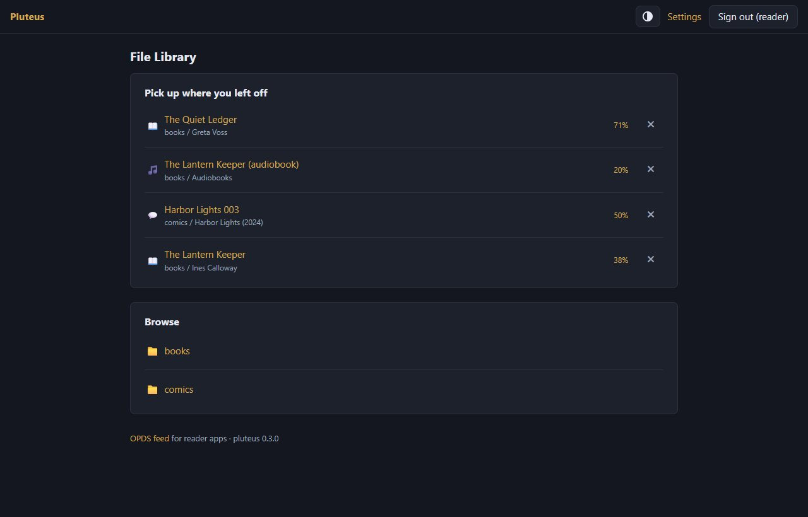
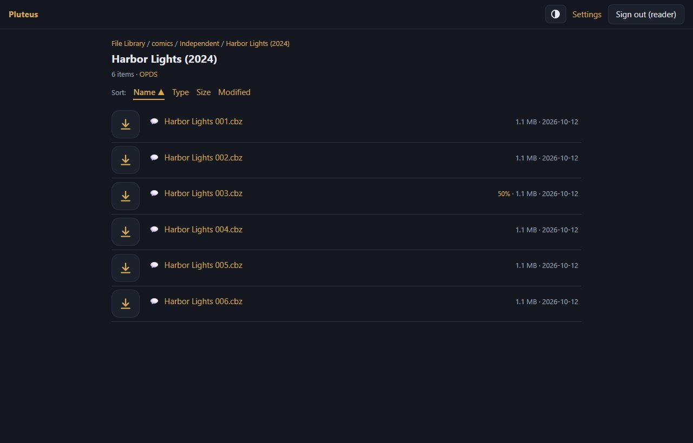
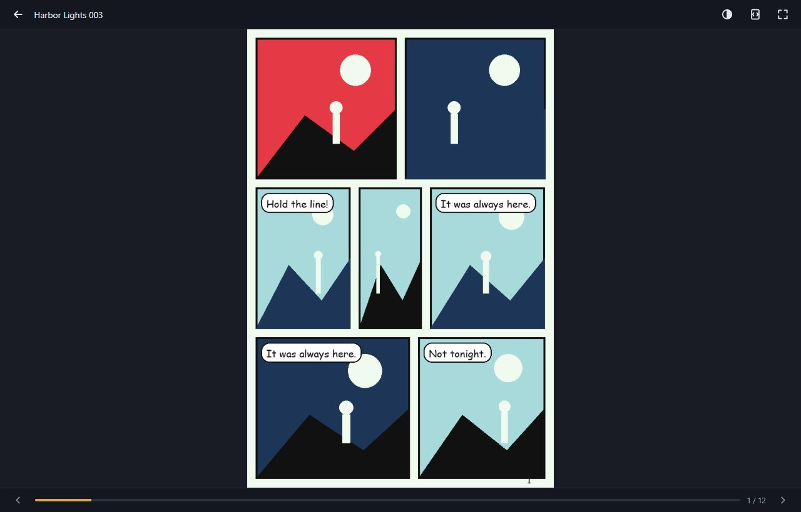
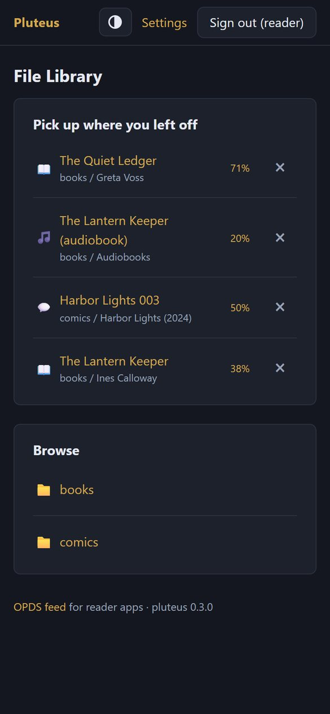
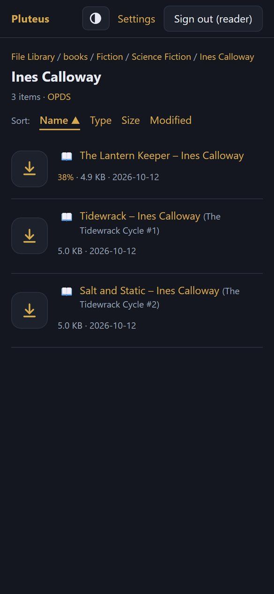
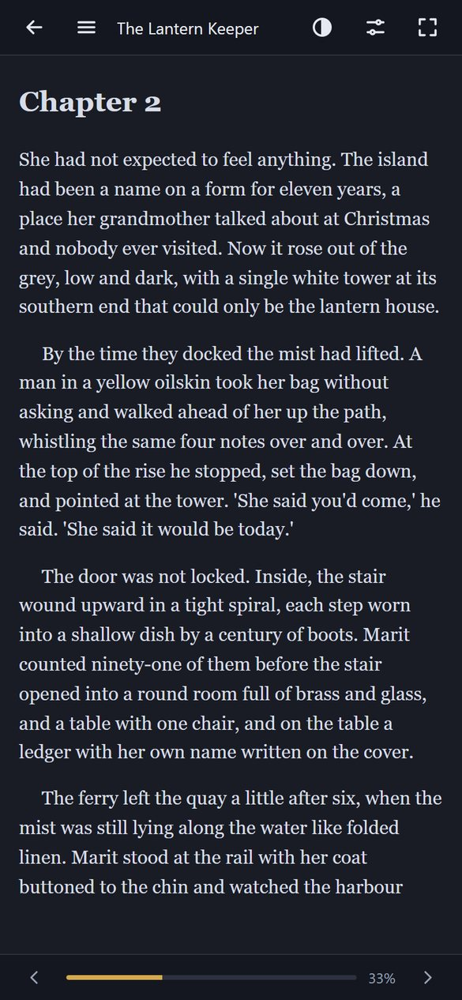
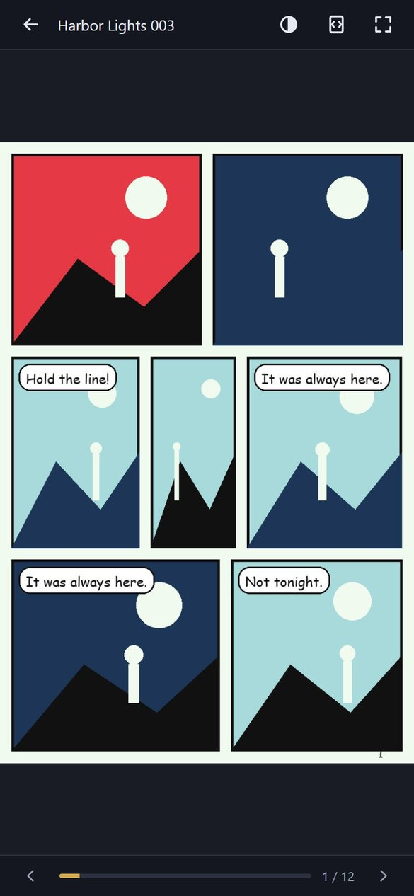
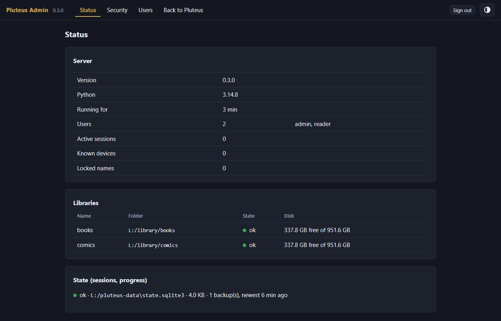

Pluteus
A light library server for people who keep their books and comics as plain folders. Browse the real folder tree, read from any OPDS app, read in the browser, and never wait for a rescan.

What it is
Most library servers read everything into a database first, which flattens your folders and needs a long rescan whenever the library changes. Pluteus does the opposite: the folder tree is the catalogue. Every folder is one OPDS feed and one web page, read live from disk when you open it, so a file you have just added is there at once. It was written as a light replacement for Ubooquity, on a library of roughly ten terabytes of books and comics, and it is Python with a handful of dependencies, no Java and no scanning step.
Numbered folder names such as 3.23 - Vertigo sort naturally (3.9 before 3.10) and the number is hidden in the display name. Your files are never written to: libraries are meant to be mounted read-only.


Features
- OPDS feeds for reader apps (KOReader, Moon+ Reader, Librera, PocketBook and similar), including page streaming for comics, so a comic app need not download a whole CBZ first. Apps sign in with HTTP Basic.
- A web UI over the real folder tree, with breadcrumbs, sorting, and an icon on every file. EPUBs show the title, author and series stored inside the file, read only for the books on the page and cached.
- Readers in the browser for EPUB, comics (CBZ, CBR, CB7 and CBT) and PDF, with your place saved per user. The EPUB reader shows one centred page by default, with two pages as an option; the readers are skinnable.
- Viewers for images, audio, video, text, Markdown, CSV and zip files. Small m4b audiobook support: 30-second skips, speed, a sleep timer and lock-screen controls.
- Pick up where you left off: the home page lists what you were reading with a percentage, and you can remove an entry you are done with.
- Per-user logins with their own progress, and per-user access to individual libraries. A personal upload folder for each user, kept apart from the libraries.
- Folder markers: an empty
.adultfile hides a folder and everything below it from users without adult access;.privatelists the only users who may open it;.hiddenleaves a folder out of listings while a direct link still works. A marker is a file on disk, so there is nothing to configure per folder. - Themes: dark and light, a gold accent, and replaceable theme files that reload without a restart.




Made to be used from the internet
Pluteus is meant to sit behind a reverse proxy such as Caddy, with HTTPS, and to be used from a phone anywhere. For that it has:
- Login protection: wrong passwords lock a user name for longer each time (5 minutes, 30 minutes, 3 hours, 6 hours), while a device that has signed in before is not locked out. Passwords are hashed with scrypt and must be at least eight characters.
- Same-site checks on every change, a strict content security policy, and paths that cannot leave the library folder.
- A read-only view of your libraries: pluteus never writes to them. The only place it writes is the small state folder and the upload folder you give it.
- A hardened Docker setup in the repository: read-only root filesystem, no capabilities, and a non-root user.
- An admin page on its own port, meant for the local network only and never routed by the proxy: server status with traffic-light indicators, locked names and known devices, and user management. It is off until you set a port.

What it deliberately does not do
No library database, no search across the whole library, no “recently added” list, no duplicate detection, no cover images, no online metadata lookups and no sign-up. (It does read the title, author and series already written inside your EPUBs, for the books on the page you are looking at.) Anything that would need scanning the whole tree is left out on purpose, because that lightness is the point. Pluteus is not a replacement for Nextcloud, Calibre or Jellyfin.
Run it
With Docker, from a clone of the repository:
git clone https://github.com/Erlbon/pluteus
cd pluteus
cp config.example.toml config/config.toml # edit: container paths, host = "0.0.0.0", data_dir = "/data"
cp docker-compose.example.yml docker-compose.yml
docker compose up -d --buildOr natively with Python 3.11 or newer: pip install ., then python -m pluteus serve --config config.toml. The repository has a guide for both (docs/running.md), a Windows script that starts it at boot, and a walkthrough for putting it behind HTTPS and installing it on an Android phone. Open http://<host>:8080/ in a browser, or add http://<host>:8080/opds as a catalogue in a reader app.
Status
Version 0.3.1, in daily use by its author, and young. The tested paths are Docker Desktop on Windows with the libraries on local drives, and PocketBook as the OPDS app. Other reader apps should work, since OPDS is a standard, but have not been tried yet. The test suite has several hundred tests and runs before every push.
Licence
MIT. The bundled third-party scripts (epub.js, JSZip, pdf.js) keep their own licences, shipped next to the files.